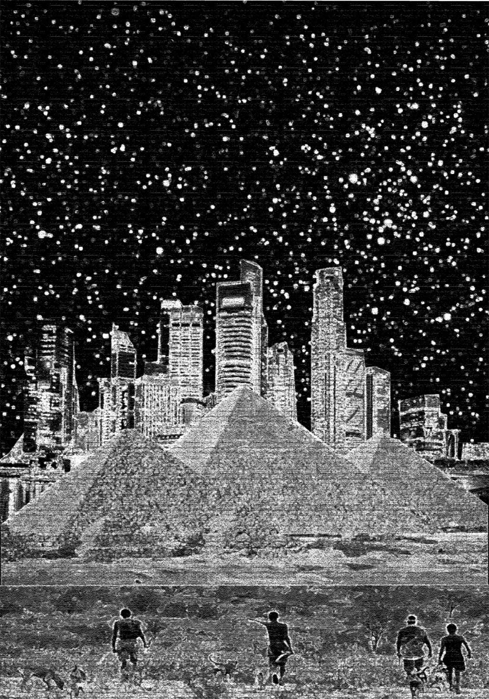

Croisade devient La quatrième théorie

Entre le blog, les réseaux sociaux et le mail, vous avez êtes plus d’une cinquantaine à plébisciter ce nouveau titre pour mon twiller.
À cause de vos arguments, l’autre titre, Freemen, a soudain pris un coup de vieux. Que ceux qui l’ont aimé ne s’inquiètent pas. Les Freemen restent les héros du roman qui avec son nouveau titre saura mieux trouver sa place dans la collection Fayard Noir, tournée vers l’ultracontemporain.
La quatrième théorie évoque pour moi l’avenir, ce qui arrive après toutes les merdes que nous nous coltinons depuis trop longtemps. J’espère que ce titre saura éveiller l’espoir et intriguer en même temps.
Suite | 2012 | Sommaire | Texte publié mardi 6 novembre 2012